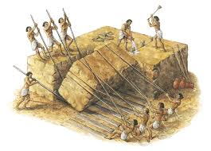

Pulling strings to build pyramids

No one knows exactly how the pyramids were built. Marcus Chown reckons the answer could be 'hanging in the air'.
The pyramids of Egypt were built more than three thousand years ago, and no one knows how. The conventional picture is that tens of thousands of slaves dragged stones on sledges. But there is no evidence to back this up. Now a Californian software consultant called Maureen Clemmons has suggested that kites might have been involved. While perusing a book on the monuments of Egypt, she noticed a hieroglyph that showed a row of men standing in odd postures. They were holding what looked like ropes that led, via some kina of mechanical system, to a giant bird in the sky. She wondered if perhaps the bird was actually a giant kite, and the men were using it to lift a heavy object.
Intrigued, Clemmons contacted Morteza Gharib, aeronautics professor at the California Institute of Technology. He was fascinated by the idea. 'Coming from Iran, I have a keen interest in Middle Eastern science/ he says. He too was puzzled by the picture that had sparked Clemmons's interest. The object in the sky apparently had wings far too short and wide for a bird. The possibility certainly existed that it was a kite/ he says. And since he needed a summer project for his student Emilio Graff, investigating the possibility of using kites as heavy lifters seemed like a good idea.
Gharib and Graff set themselves the task of raising a 4.5-metre stone column from horizontal to vertical, using no source of energy except the wind. Their initial calculations and scale-model wind-tunnel experiments convinced them they wouldn't need a strong wind to lift the 33.5-tonne column. Even a modest force, if sustained over a long time, would do. The key was to use a pulley system that would magnify the applied force. So they rigged up a tent-shaped scaffold directly above the tip of the horizontal column, with pulleys suspended from the scaffold's apex. The idea was that as one end of the column rose, the base would roll across the ground on a trolley.
Earlier this year, the team put Clemmons's unlikely theory to the test, using a 40-square-metre rectangular nylon sail. The kite lifted the column clean off the ground. 'We were absolutely stunned,' Gharib says. The instant the sail opened into the wind, a huge force was generated and the column was raised to the vertical in a mere 40 seconds.'
The wind was blowing at a gentle 16 to 20 kilometres an hour, little more than half what they thought would be needed. What they had failed to reckon with was what happened when the kite was opened. There was a huge initial force - five times larger than the steady state force,' Gharib says. This jerk meant that kites could lift huge weights, Gharib realised. Even a 300-tonne column could have been lifted to the vertical with 40 or so men and four or five sails. So Clemmons was right: the pyramid, builders could have used kites to lift massive stones into place. 'Whether they actually did is another matter,' Gharib says. There are no pictures showing the construction of the pyramids, so there is no way to tell what really happened. The evidence for using kites to move large stones is no better or worse than the evidence for the brute force method,' Gharib says.
Indeed, the experiments have left many specialists unconvinced. The evidence for kitelifting is non-existent,' says Willeke Wendrich, an associate professor of Egyptology at the University of California, Los Angeles.
Others feel there is more of a case for the theory. Harnessing the wind would not have been a problem for accomplished sailors like the Egyptians. And they are known to have used wooden pulleys, which could have been made strong enough to bear the weight of massive blocks of stone. In addition, there is some physical evidence that the ancient Egyptians were interested in flight. A wooden artefact found on the step pyramid at Saqqara looks uncannily like a modern glider. Although it dates from several hundred years after the building of the pyramids, its sophistication suggests that the Egyptians might nave been developing ideas of flight for a long time. And other ancient civilisations certainly knew about kites; as early as 1250 BC, the Chinese were using them to deliver messages and dump flaming debris on their foes.
The experiments might even have practical uses nowadays. There are plenty of places around the globe where people have no access to heavy machinery, but do know how to deal with wind, sailing and basic mechanical principles. Gharib has already been contacted by a civil engineer in Nicaragua, who wants to put up buildings with adobe roofs supported by concrete arches on a site that heavy equipment can't reach. His idea is to build the arcnes horizontally, then lift them into place using kites. 'We've given him some design hints,' says Gharib. We're just waiting for him to report back.' So whether they were actually used to build the pyramids or not, it seems that kites may make sensible construction tools in the 21 st century AD.
Questions 1-7
Do the following statements agree with the information given in Reading Passage?
In boxes 1-7 on your answer sheet, write
TRUE if the statement agrees with the information
FALSE if the statement contradicts the information
NOT GIVEN if there is no information on this
1 It is generally believed that large numbers of people were needed to build the pyramids.
2 Clemmons found a strange hieroglyph on the wall of an Egyptian monument.
3 Gharib had previously done experiments on bird flight.
4 Gharib and Graff tested their theory before applying it.
5 The success of the actual experiment was due to the high speed of the wind.
6 They found that, as the kite flew higher, the wind force got stronger.
7 The team decided that it was possible to use kites to raise very heavy stones.
Questions 8-13
Complete the summary below.
Choose NO MORE THAN TWO WORDS from the passage for each answer.
Write your answers in boxes 8-13 on your answer sheet.
Additional evidence for theory of kite-lifting
The Egyptians had 8 which could lift large pieces of 9 and they knew how to use the energy of the wind from their skill as 10 .
The discovery on one pyramid of an object which resembled a 11 suggests they may have experimented with 12 .
In addition, over two thousand years ago kites were used in China as weapons, as well as for sending 13 .
---End of the Test---
Please Submit to view your score, solution and explanations.